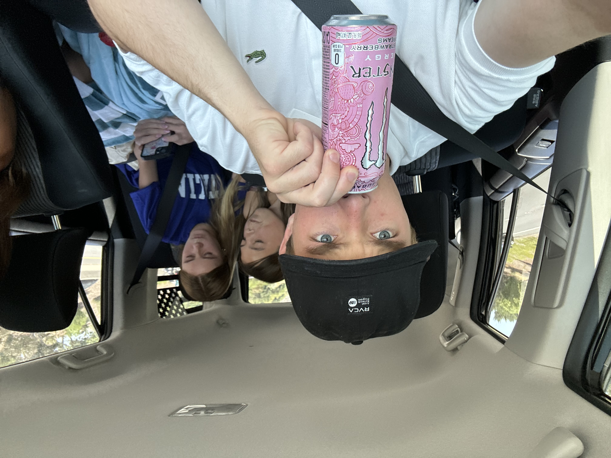

Résumé

Personable and outgoing college student at BYU seeking to gain experience and develop strong people skills while helping a company grow.
Education
Brigham Young University (BYU)
Current Student
Current Student
San Juan Hills High School
GPA: 4.2 | Graduation: 2022
Activities: Student Government, Football, Track
GPA: 4.2 | Graduation: 2022
Activities: Student Government, Football, Track
Experience
Marketing Intern - WKS Restaurant Group
Jan 2025 - Present
Jan 2025 - Present
- Manage and respond to customer reviews for multi-location car wash brand
- Collaborate with marketing team to improve brand perception and local SEO
- Track and report engagement analytics across review platforms
Church Missionary — Houston, Texas
2022-2024
2022-2024
- Community service and outreach
- Led 170 missionaries for 9 out of 24 months
- Teaching, mentoring, and communication skills
Rip Curl Surf Outlet - Team Member
Aug 2020 - Mar 2021
Aug 2020 - Mar 2021
- Sales and customer service
- Operated cash register
- Pricing and merchandising
Cal Elite Kids - Swim Instructor
Sept 2021 - Mar 2022
Sept 2021 - Mar 2022
- Taught swimming to children ages 1-10
- Customer service and parent interaction
Skills
- Integrity
- Bilingual: English & Spanish
- Outgoing
- Hardworking
- Sales & negotiation
- Strong communicator
Certifications & Honors
- 2018-2022 Honor Roll Student
- 2018-2022 Student Government Member
- 2020-2021 Junior Class President